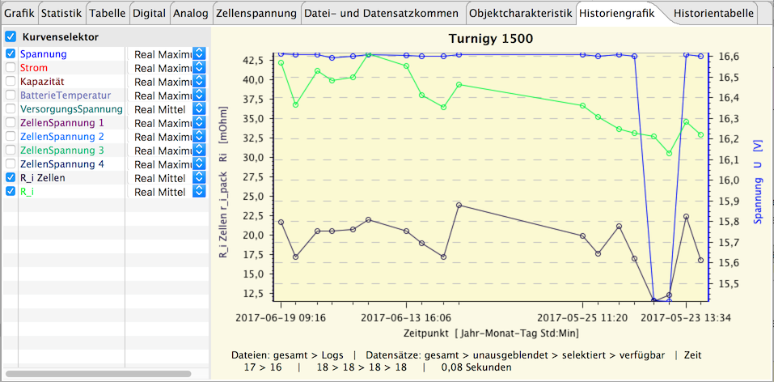

Wählt man diesen Tabulator an, findet im Hintergrund eine Analyse der aktuell auf Gerät und Objekt bezogenen Dateien statt. Sie werden auf einer Zeitlinie dargestellt.
Die analysierten Daten kommen vorzugsweise aus selbst gespeicherten OSD-Dateien mit Objektzuordnung. Ist kein Objekt angelegt oder 'gerätebezogen' eingestellt, wird der gesamte dem Gerät zugeordnete Ordner durchsucht. Hierbei kann es passieren, dass im Falle eines Ladegerätes beispielsweise LiPo-Akkus unterschiedlicher Zellenanzahl und NiMH unterschiedlicher Zellenanzahl in die Auswertung kommen. Um solche Situationen zu vermeiden, sollte man Objekte anlegen und OSD-Dateien ausschließlich im passenden Objektordner ablegen. Beim Neuanlegen eines Objektes (siehe letzte Abschnitte hier) wird dazu auch der zugehörende Ordner mit gleichem Namen angelegt. Für künftige OSD-Dateien werden dann Verknüpfungen im Objektordner erstellt. Hinweis: Dieses Tabulatorfenster ist nur sichtbar, wenn man in den Einstellungen 'Historiendaten auswerten' ausgewählt hat.
Je nach gewähltem Gerät und Historien-Einstellungen kann der Umfang der zusätzlich berechneten Werte vom oben Gezeigten abweichen. Der Geräte-Implementierungsstand und der Inhalt der Geräte beschreibenden XML tragen ihren Teil dazu bei. Der erweiterte Kurvenselektor ermöglicht die Auswahl bestimmter statistischer Werte in Abhängigkeit der Einstellungen. Es ist ratsam, für die Historienauswertung ebenfalls Grafikvorlagen zu sichern. Sie unterscheiden sich durch die erweiterten Einstellungen von den normalen Templates.
Zusätzliche Funktionen im Kontext-Menü des Grafikbereichs:
Hinweis: Unterstützt ein Gerät den Import von Log-Dateien (siehe Punkt 'Import' hier), können auch diese in die Auswertung mit einbezogen werden, wenn die aktuelle Geräte-Implementierung dies bereits unterstützt. So ist es möglich, in diesen Fällen auf OSD-Dateien zu verzichten.